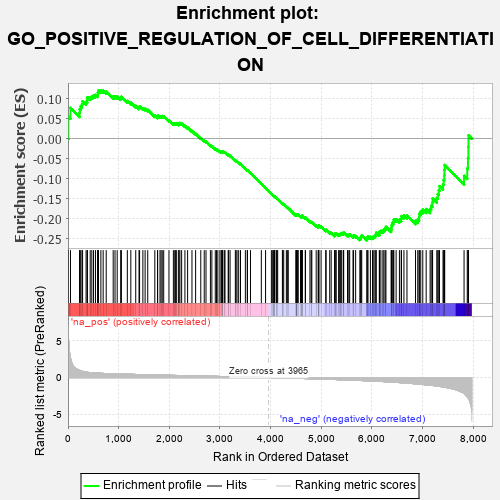
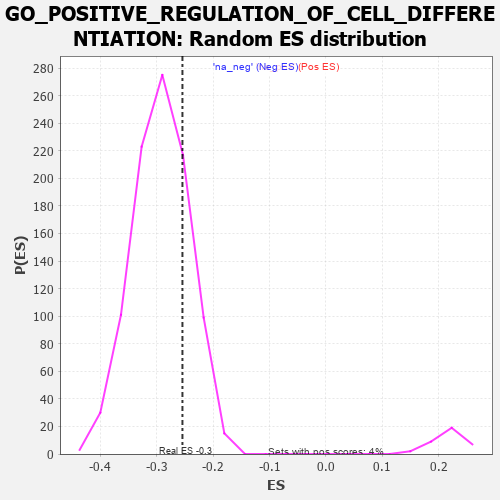

| | | Dataset | 7d |
| Phenotype | NoPhenotypeAvailable |
| Upregulated in class | na_neg |
| GeneSet | GO_POSITIVE_REGULATION_OF_CELL_DIFFERENTIATION |
| Enrichment Score (ES) | -0.2542097 |
| Normalized Enrichment Score (NES) | -0.8706573 |
| Nominal p-value | 0.76116306 |
| FDR q-value | 0.9663684 |
| FWER p-Value | 1.0 |
Table: GSEA Results Summary

Fig 1: Enrichment plot: GO_POSITIVE_REGULATION_OF_CELL_DIFFERENTIATION
Profile of the Running ES Score & Positions of GeneSet Members on the Rank Ordered List
| PROBE | GENE SYMBOL | GENE_TITLE | RANK IN GENE LIST | RANK METRIC SCORE | RUNNING ES | CORE ENRICHMENT | | 1 | SYT2 | | | 8 | 5.577 | 0.0553 | No |
| 2 | TGFB3 | | | 49 | 2.654 | 0.0770 | No |
| 3 | RHOH | | | 228 | 0.987 | 0.0640 | No |
| 4 | SMAD5 | | | 231 | 0.979 | 0.0737 | No |
| 5 | INSM1 | | | 250 | 0.939 | 0.0808 | No |
| 6 | HGF | | | 276 | 0.870 | 0.0864 | No |
| 7 | SHOX2 | | | 288 | 0.842 | 0.0935 | No |
| 8 | ARNT | | | 357 | 0.741 | 0.0923 | No |
| 9 | SOX13 | | | 380 | 0.717 | 0.0967 | No |
| 10 | AXIN2 | | | 383 | 0.713 | 0.1036 | No |
| 11 | RRN3 | | | 438 | 0.667 | 0.1034 | No |
| 12 | LRP1 | | | 470 | 0.648 | 0.1060 | No |
| 13 | MYOD1 | | | 504 | 0.628 | 0.1081 | No |
| 14 | SRF | | | 542 | 0.615 | 0.1095 | No |
| 15 | DDX56 | | | 584 | 0.600 | 0.1103 | No |
| 16 | ALX1 | | | 590 | 0.598 | 0.1157 | No |
| 17 | FBXW8 | | | 601 | 0.594 | 0.1204 | No |
| 18 | RBM4 | | | 649 | 0.576 | 0.1202 | No |
| 19 | XRCC6 | | | 694 | 0.560 | 0.1202 | No |
| 20 | SETD3 | | | 754 | 0.544 | 0.1181 | No |
| 21 | HMGB2 | | | 892 | 0.507 | 0.1056 | No |
| 22 | SF3A2 | | | 928 | 0.500 | 0.1061 | No |
| 23 | DVL3 | | | 971 | 0.490 | 0.1057 | No |
| 24 | AKT1 | | | 1040 | 0.476 | 0.1017 | No |
| 25 | MEF2C | | | 1054 | 0.473 | 0.1048 | No |
| 26 | RFX3 | | | 1171 | 0.451 | 0.0945 | No |
| 27 | KAT7 | | | 1240 | 0.440 | 0.0902 | No |
| 28 | NKAP | | | 1337 | 0.422 | 0.0821 | No |
| 29 | NOCT | | | 1402 | 0.409 | 0.0780 | No |
| 30 | CARM1 | | | 1413 | 0.408 | 0.0808 | No |
| 31 | TIMP2 | | | 1478 | 0.394 | 0.0766 | No |
| 32 | WDFY2 | | | 1522 | 0.388 | 0.0749 | No |
| 33 | FZD1 | | | 1574 | 0.379 | 0.0722 | No |
| 34 | TRAK1 | | | 1714 | 0.354 | 0.0579 | No |
| 35 | LLPH | | | 1768 | 0.343 | 0.0545 | No |
| 36 | LRP5 | | | 1769 | 0.342 | 0.0580 | No |
| 37 | FMR1 | | | 1816 | 0.334 | 0.0554 | No |
| 38 | GATA4 | | | 1837 | 0.330 | 0.0562 | No |
| 39 | SMAD4 | | | 1860 | 0.326 | 0.0567 | No |
| 40 | PAK3 | | | 1889 | 0.322 | 0.0563 | No |
| 41 | ROR1 | | | 1993 | 0.306 | 0.0461 | No |
| 42 | LRRC7 | | | 2080 | 0.294 | 0.0380 | No |
| 43 | BMP7 | | | 2107 | 0.290 | 0.0376 | No |
| 44 | ISLR2 | | | 2124 | 0.287 | 0.0385 | No |
| 45 | ATOH8 | | | 2145 | 0.285 | 0.0388 | No |
| 46 | SYK | | | 2186 | 0.278 | 0.0364 | No |
| 47 | C1QBP | | | 2189 | 0.278 | 0.0390 | No |
| 48 | OTP | | | 2209 | 0.275 | 0.0393 | No |
| 49 | CREB1 | | | 2243 | 0.269 | 0.0378 | No |
| 50 | REST | | | 2308 | 0.259 | 0.0322 | No |
| 51 | SIN3A | | | 2361 | 0.251 | 0.0280 | No |
| 52 | KDM1A | | | 2447 | 0.237 | 0.0195 | No |
| 53 | NUMB | | | 2519 | 0.224 | 0.0126 | No |
| 54 | ETV4 | | | 2621 | 0.209 | 0.0017 | No |
| 55 | DSCAM | | | 2689 | 0.200 | -0.0049 | No |
| 56 | SLIT2 | | | 2724 | 0.195 | -0.0073 | No |
| 57 | SYAP1 | | | 2811 | 0.182 | -0.0165 | No |
| 58 | PA2G4 | | | 2840 | 0.177 | -0.0183 | No |
| 59 | ZC4H2 | | | 2907 | 0.164 | -0.0252 | No |
| 60 | ACVR1 | | | 2932 | 0.161 | -0.0266 | No |
| 61 | BTK | | | 2958 | 0.156 | -0.0283 | No |
| 62 | SMYD1 | | | 2998 | 0.150 | -0.0318 | No |
| 63 | WNT4 | | | 3023 | 0.146 | -0.0334 | No |
| 64 | LEF1 | | | 3037 | 0.144 | -0.0336 | No |
| 65 | UFL1 | | | 3041 | 0.144 | -0.0325 | No |
| 66 | SRRT | | | 3050 | 0.143 | -0.0321 | No |
| 67 | FEZ1 | | | 3055 | 0.142 | -0.0312 | No |
| 68 | HDAC1 | | | 3086 | 0.138 | -0.0337 | No |
| 69 | RREB1 | | | 3099 | 0.137 | -0.0338 | No |
| 70 | GCNT2 | | | 3162 | 0.128 | -0.0405 | No |
| 71 | PAX6 | | | 3170 | 0.127 | -0.0401 | No |
| 72 | TWF1 | | | 3199 | 0.123 | -0.0425 | No |
| 73 | SMAD3 | | | 3303 | 0.105 | -0.0547 | No |
| 74 | PARP2 | | | 3316 | 0.103 | -0.0552 | No |
| 75 | SMAD1 | | | 3337 | 0.099 | -0.0568 | No |
| 76 | SMAD7 | | | 3369 | 0.093 | -0.0598 | No |
| 77 | MED1 | | | 3405 | 0.089 | -0.0634 | No |
| 78 | FES | | | 3501 | 0.077 | -0.0749 | No |
| 79 | NELL1 | | | 3538 | 0.070 | -0.0788 | No |
| 80 | PIN1 | | | 3543 | 0.069 | -0.0786 | No |
| 81 | STK25 | | | 3602 | 0.059 | -0.0855 | No |
| 82 | SUCO | | | 3816 | 0.025 | -0.1127 | No |
| 83 | NIPBL | | | 3900 | 0.010 | -0.1232 | No |
| 84 | PARP1 | | | 4014 | -0.010 | -0.1377 | No |
| 85 | VEZF1 | | | 4033 | -0.013 | -0.1399 | No |
| 86 | TAL1 | | | 4064 | -0.018 | -0.1435 | No |
| 87 | SFRP2 | | | 4065 | -0.018 | -0.1434 | No |
| 88 | ROBO2 | | | 4066 | -0.018 | -0.1432 | No |
| 89 | CSF1 | | | 4074 | -0.019 | -0.1439 | No |
| 90 | WNT2 | | | 4084 | -0.021 | -0.1448 | No |
| 91 | MTOR | | | 4114 | -0.025 | -0.1483 | No |
| 92 | ABL1 | | | 4125 | -0.027 | -0.1493 | No |
| 93 | CRK | | | 4139 | -0.031 | -0.1507 | No |
| 94 | ARPC2 | | | 4232 | -0.047 | -0.1620 | No |
| 95 | GPC1 | | | 4238 | -0.048 | -0.1622 | No |
| 96 | PCID2 | | | 4258 | -0.051 | -0.1641 | No |
| 97 | SYT17 | | | 4310 | -0.061 | -0.1701 | No |
| 98 | OPA1 | | | 4330 | -0.065 | -0.1719 | No |
| 99 | FIG4 | | | 4348 | -0.068 | -0.1734 | No |
| 100 | MEF2A | | | 4499 | -0.095 | -0.1917 | No |
| 101 | MOB2 | | | 4504 | -0.095 | -0.1913 | No |
| 102 | ILK | | | 4510 | -0.096 | -0.1909 | No |
| 103 | SNW1 | | | 4514 | -0.096 | -0.1903 | No |
| 104 | WNT5B | | | 4517 | -0.098 | -0.1896 | No |
| 105 | NPTN | | | 4519 | -0.098 | -0.1887 | No |
| 106 | RIN2 | | | 4535 | -0.101 | -0.1897 | No |
| 107 | NTRK2 | | | 4543 | -0.104 | -0.1895 | No |
| 108 | SYT4 | | | 4590 | -0.116 | -0.1943 | No |
| 109 | GATA3 | | | 4614 | -0.120 | -0.1960 | No |
| 110 | ATOH1 | | | 4615 | -0.121 | -0.1948 | No |
| 111 | DLG5 | | | 4619 | -0.121 | -0.1939 | No |
| 112 | RAB21 | | | 4620 | -0.122 | -0.1927 | No |
| 113 | SPEN | | | 4621 | -0.122 | -0.1915 | No |
| 114 | LIMK1 | | | 4684 | -0.136 | -0.1981 | No |
| 115 | PTK7 | | | 4687 | -0.136 | -0.1970 | No |
| 116 | PIM1 | | | 4776 | -0.152 | -0.2067 | No |
| 117 | TERT | | | 4801 | -0.157 | -0.2083 | No |
| 118 | P2RX4 | | | 4813 | -0.161 | -0.2080 | No |
| 119 | MARK2 | | | 4899 | -0.177 | -0.2172 | No |
| 120 | FZD4 | | | 4940 | -0.186 | -0.2205 | No |
| 121 | EP300 | | | 4941 | -0.186 | -0.2186 | No |
| 122 | XRCC5 | | | 4946 | -0.187 | -0.2172 | No |
| 123 | PRKDC | | | 4955 | -0.189 | -0.2163 | No |
| 124 | PROM1 | | | 4996 | -0.197 | -0.2195 | No |
| 125 | DRD2 | | | 5088 | -0.221 | -0.2289 | No |
| 126 | ITSN1 | | | 5094 | -0.222 | -0.2273 | No |
| 127 | TBX1 | | | 5166 | -0.241 | -0.2340 | No |
| 128 | SMO | | | 5195 | -0.247 | -0.2352 | No |
| 129 | PTEN | | | 5262 | -0.261 | -0.2410 | No |
| 130 | RIMS2 | | | 5272 | -0.265 | -0.2395 | No |
| 131 | EPHA4 | | | 5273 | -0.265 | -0.2368 | No |
| 132 | MAGI2 | | | 5295 | -0.269 | -0.2368 | No |
| 133 | LMO3 | | | 5342 | -0.283 | -0.2399 | No |
| 134 | AAMDC | | | 5355 | -0.287 | -0.2385 | No |
| 135 | CPNE9 | | | 5374 | -0.289 | -0.2379 | No |
| 136 | DLG4 | | | 5388 | -0.293 | -0.2366 | No |
| 137 | SOX8 | | | 5404 | -0.296 | -0.2356 | No |
| 138 | CUX1 | | | 5437 | -0.304 | -0.2366 | No |
| 139 | IST1 | | | 5442 | -0.305 | -0.2340 | No |
| 140 | VDR | | | 5517 | -0.325 | -0.2403 | No |
| 141 | FGFR1 | | | 5543 | -0.332 | -0.2401 | No |
| 142 | EHD1 | | | 5560 | -0.336 | -0.2388 | No |
| 143 | ROR2 | | | 5626 | -0.353 | -0.2436 | No |
| 144 | ASPM | | | 5637 | -0.358 | -0.2413 | No |
| 145 | CASP8 | | | 5678 | -0.369 | -0.2427 | No |
| 146 | TLR2 | | | 5761 | -0.395 | -0.2493 | No |
| 147 | VAMP7 | | | 5777 | -0.399 | -0.2472 | No |
| 148 | TRPC6 | | | 5784 | -0.401 | -0.2439 | No |
| 149 | ADA | | | 5798 | -0.405 | -0.2415 | No |
| 150 | VLDLR | | | 5898 | -0.434 | -0.2498 | Yes |
| 151 | DOCK1 | | | 5908 | -0.438 | -0.2466 | Yes |
| 152 | STK11 | | | 5922 | -0.443 | -0.2438 | Yes |
| 153 | TTBK1 | | | 5969 | -0.460 | -0.2450 | Yes |
| 154 | XBP1 | | | 6011 | -0.475 | -0.2455 | Yes |
| 155 | RAC1 | | | 6036 | -0.484 | -0.2437 | Yes |
| 156 | JAG1 | | | 6060 | -0.494 | -0.2417 | Yes |
| 157 | CALR | | | 6077 | -0.499 | -0.2387 | Yes |
| 158 | DBNL | | | 6084 | -0.501 | -0.2344 | Yes |
| 159 | STK4 | | | 6145 | -0.518 | -0.2369 | Yes |
| 160 | FEZF2 | | | 6150 | -0.519 | -0.2322 | Yes |
| 161 | RAG1 | | | 6176 | -0.530 | -0.2300 | Yes |
| 162 | SMAD2 | | | 6216 | -0.541 | -0.2296 | Yes |
| 163 | CDC42 | | | 6236 | -0.548 | -0.2265 | Yes |
| 164 | AP3D1 | | | 6261 | -0.558 | -0.2239 | Yes |
| 165 | FLOT1 | | | 6276 | -0.564 | -0.2200 | Yes |
| 166 | CDON | | | 6378 | -0.607 | -0.2269 | Yes |
| 167 | ISG15 | | | 6385 | -0.608 | -0.2215 | Yes |
| 168 | TRPM4 | | | 6390 | -0.612 | -0.2159 | Yes |
| 169 | CDKL3 | | | 6401 | -0.618 | -0.2109 | Yes |
| 170 | PTPRD | | | 6423 | -0.629 | -0.2073 | Yes |
| 171 | MALT1 | | | 6432 | -0.634 | -0.2019 | Yes |
| 172 | SOX2 | | | 6477 | -0.652 | -0.2010 | Yes |
| 173 | DDR2 | | | 6542 | -0.681 | -0.2023 | Yes |
| 174 | ROBO1 | | | 6577 | -0.699 | -0.1996 | Yes |
| 175 | ARF1 | | | 6583 | -0.701 | -0.1932 | Yes |
| 176 | WWTR1 | | | 6631 | -0.729 | -0.1919 | Yes |
| 177 | PAK1 | | | 6691 | -0.757 | -0.1918 | Yes |
| 178 | AHI1 | | | 6860 | -0.848 | -0.2049 | Yes |
| 179 | WIF1 | | | 6904 | -0.870 | -0.2016 | Yes |
| 180 | LRP8 | | | 6931 | -0.889 | -0.1960 | Yes |
| 181 | SNX3 | | | 6934 | -0.893 | -0.1872 | Yes |
| 182 | DNM1L | | | 6963 | -0.913 | -0.1816 | Yes |
| 183 | CCR2 | | | 7003 | -0.939 | -0.1771 | Yes |
| 184 | CPNE5 | | | 7070 | -0.977 | -0.1758 | Yes |
| 185 | SYT1 | | | 7148 | -1.033 | -0.1752 | Yes |
| 186 | AR | | | 7169 | -1.046 | -0.1673 | Yes |
| 187 | TSPO | | | 7194 | -1.065 | -0.1596 | Yes |
| 188 | OVOL2 | | | 7197 | -1.068 | -0.1490 | Yes |
| 189 | CIB1 | | | 7280 | -1.152 | -0.1480 | Yes |
| 190 | MSX2 | | | 7299 | -1.171 | -0.1384 | Yes |
| 191 | GRN | | | 7319 | -1.194 | -0.1288 | Yes |
| 192 | CYLD | | | 7333 | -1.206 | -0.1183 | Yes |
| 193 | LOXL2 | | | 7403 | -1.269 | -0.1144 | Yes |
| 194 | TPH1 | | | 7416 | -1.286 | -0.1029 | Yes |
| 195 | KLF5 | | | 7429 | -1.304 | -0.0913 | Yes |
| 196 | LHX1 | | | 7431 | -1.305 | -0.0782 | Yes |
| 197 | SPDEF | | | 7436 | -1.313 | -0.0655 | Yes |
| 198 | TRAF6 | | | 7818 | -2.157 | -0.0927 | Yes |
| 199 | FYN | | | 7881 | -2.622 | -0.0742 | Yes |
| 200 | CAV3 | | | 7896 | -2.739 | -0.0483 | Yes |
| 201 | PLCB1 | | | 7904 | -2.841 | -0.0205 | Yes |
| 202 | FBN2 | | | 7906 | -2.873 | 0.0084 | Yes |
Table: GSEA details [plain text format]

Fig 2: GO_POSITIVE_REGULATION_OF_CELL_DIFFERENTIATION: Random ES distribution
Gene set null distribution of ES for GO_POSITIVE_REGULATION_OF_CELL_DIFFERENTIATION